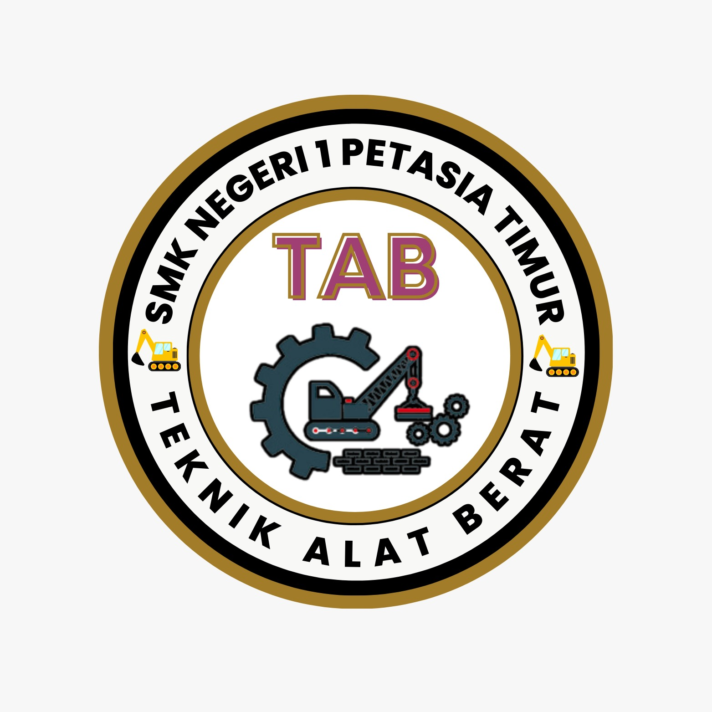

Jurusan

Rekayasa Perangkat Lunak (RPL), adalah jurusan yang mengajarkan kita untuk meranjang dan membuat suat web. jurusan ini bisa menjadikan kita sebagai webdisainer dan masi banyak lagi.

Desain Permodelan Informasi Bangunan (DPIB), adalah jurusan yang memberi suatu pengetahuan tentang informasi dan permodelan dalam struktur.

DKV Desain Komunikasi Visual (DKV), adalah jurusan bergerak dalam bidang edit dan cetak. bidang ini bisa mengasah kemampuan kita dalam berimajinasi dengan luas.

TAB Teknik Alat Berat (TAB), adalah jurusan yang mempelajari alat berat seperti exavator dan masi banyak lagi. jurusan ini bisa melatih skil untuk membawa alat berat.